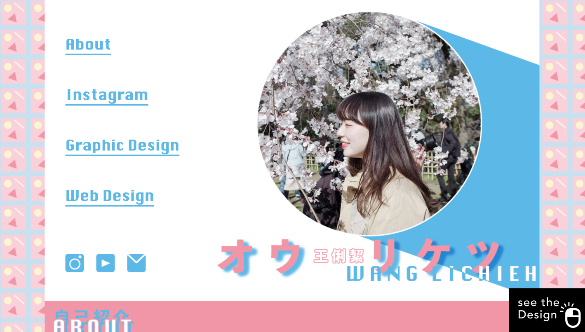

我製作了這個網站，旨在分享我的個人資訊和興趣。在這裡，你可以了解我的背景、技能和專業領域，也可以看到我熱愛的事物。
URL
https://lichiehwang-s-portfolio
負責
設計、寫程式
網站目的
讓人能透過網站，快速認識個人相關風格與背景
目標對象
擁有相同興趣與世界觀的人
關於這個網站
這個網站旨在展示我的自我介紹，因此我巧妙地融入了我個人喜愛的風格元素。以粉色和藍色為主色調，網站呈現了一種活潑可愛的設計風格。
希望這個網站能讓您更深入地了解我，歡迎隨時探索！